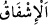

Görmek için te’villere başvurursun.
İkinci yön: Allah Teâlâ emâneti teklif ettiği sırada zikredilen cansız varlıklarda aklı
ve anlayışı yerleştirdi. Nitekim Süleyman’ın karıncasında ve hüdhüd kuşunda (bk. en-
Neml, 27/17-22) ve bunlardan başka kuşlarda, yabani ve yırtıcı hayvanlarda, hatta taş,
ağaç ve toprakta akıl ve hitabı kabul edip anlamayı yaratıp yerleştirmiştir. İşte bu akıl
ve idrak ile hitabı duydular ve Allah onları konuşturup cevap verdirdi. Allah Teâlâ
onlara: “Emâneti koruduğunuzda, yerine getirip eda ettiğinizde size sevap ve cennet
nîmetleri verilmesi; emânete vefâsızlık gösterdiğinizde ve hıyânet ettiğinizde size azab
edilmesi ve cehenneme atılmanız şartıyla siz bu emâneti alıp yükleniyor musunuz?”
buyurdu.
“Onlar bunu yüklenmekten çekindiler,” emâneti alıp taşımaktan şiddetle imtinâ
ettiler. “ imtinâ etmenin şiddetli olanıdır. Her “ imtinâdır, her imtinâ ise “
imtinâ etmenin şiddetli olanıdır. Her “ imtinâdır, her imtinâ ise “
değildir.
“ yükü alıp kaldırmak ve taşımak demektir.
“(Sorumluluğundan) korktular.”
el-Müfredât’ta der ki: “ korku ve endişeyle karışık ihtimamdır. Çünkü müşfik
olan, şefkat gösterdiğini sever ve ona gelecek zarardan korkup endişe eder. Bu fiil, “ ”
”
harf-i cerri ile müteaddî/geçişli yapılırsa korku ve endişe mânâsı, “ harf-i cerri ile
harf-i cerri ile
müteaddî/geçişli yapılırsa bu ihtimam mânâsı daha âşikar olur. Nitekim Tâcü’l-
masâdır’da aynı husus belirtilir ve iki kullanımın aslının bir olduğu söylenir.
Yâni onlar emânetten ve onu yüklenmekten korktular da “Yâ Rab, biz senin emrine
âmâdeyiz. Biz sevab da cezâ da istemiyoruz.” dediler. Onların bu sözü isyan veya
muhalefet cihetinden söylenmiş bir söz değildi. Bilakis emânetin hukukunu/haklarını eda
edemeyip azaba düşme korku ve endişelerinden kaynaklanmıştı. Onlarda istîdad,
rahmetin genişliğini ma‘rifet ve Allah Teâlâ’ya güvenme olsaydı, elbette imtinâ
etmezlerdi.
Onlara yapılan arz ve teklif, bağlayıcı ve zorunlu bir teklif değil onların muhayyer
oldukları bir teklif idi. Çünkü kabulü zorunlu olan teklife muhalefet edip ondan imtinâ
etmek, teklif sâhibinin buğz etmesini ve kemal derecesinden düşmeyi gerektirir. Halbuki
Allah Teâlâ bu imtinâ karşılığında onları kınayıp azarladığını ve cezâlandırdığını
zikretmemiştir.
İkinci görüş, emânetin gökler, yer ve dağlara arz ve teklif edilmesinin farazî ve
temsîlî olduğuna hamledilmesi/yorulmasıdır. Buna göre onların istîdadlarına nisbetle
emânetin göz önüne alınması, onlara arz ve teklif edilmesi olarak ifâde edilmiştir. Bu,
emânete son derece ehemmiyet verildiğini ve onların bile emâneti kabule teşvik
edildiğini açıklamak içindir. Yine onların emâneti kabul etmeye istîdadları olmayışı
“çekinme/imtina ve korkma” olarak ifâde edilmiştir. Bu da emânet konusunda insanları
korkutmak ve büyüklüğü hususunda terbiye etmek içindir. Emânetin kabul edilmesi de